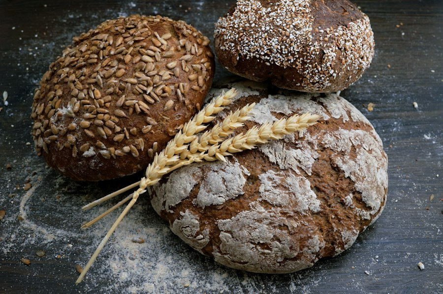
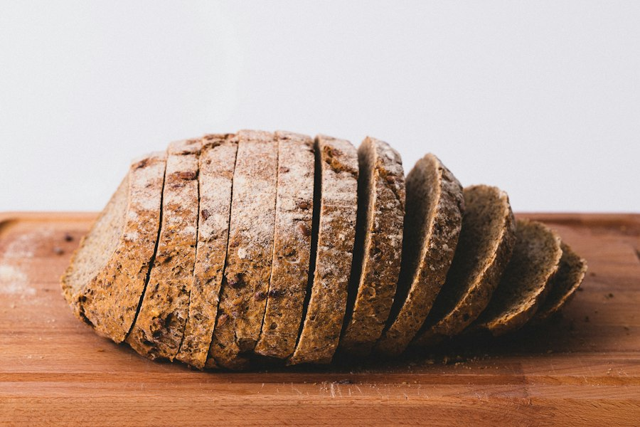
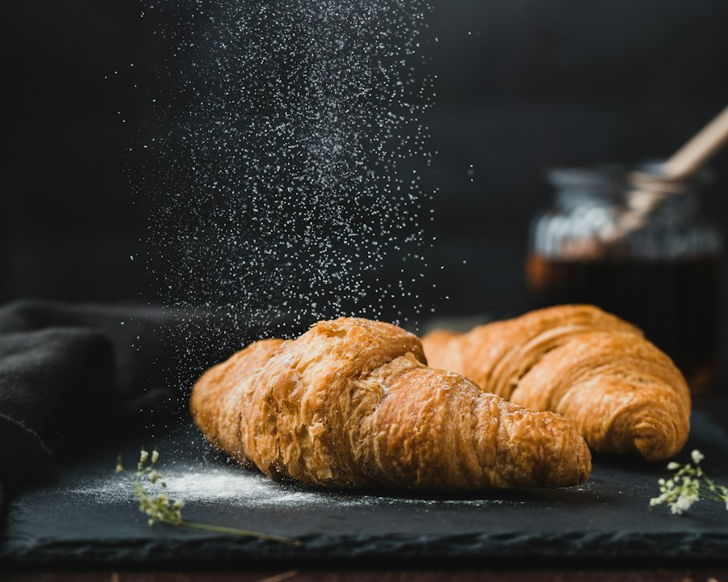

Sauerteig, der 24 Stunden reift, regionales Mehl und Hände, die wissen, was sie tun. Ab 6 Uhr aus dem Ofen.


24 Stunden Teigruhe, knusprige Kruste.
ab 4,60 €
Echte Butter, 27 Lagen, frisch gebacken.
2,20 €Mit Sonnenblumen-, Kürbis- und Leinsamen.
ab 5,20 €Bis 18 Uhr am Vortag bestellen, dein Brot liegt ab 6 Uhr für dich bereit.
Jetzt vorbestellen6:00 – 18:00 Uhr
6:00 – 14:00 Uhr
Marktplatz 4
73728 Esslingen